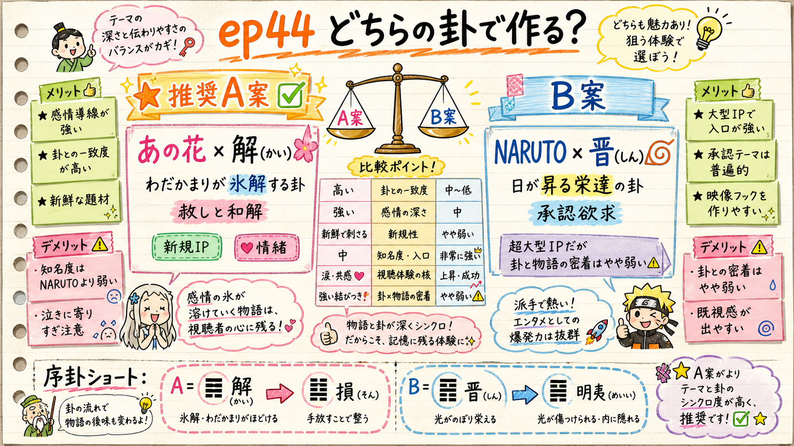

第44話 企画ゲート — 本人承認
ep44、どちらの卦で作りますか？
未使用卦22個から、大型IP × 卦の密着度で2案に絞りました。タイトルは台本確定後（Step8.5）に決めます。ここでは「卦・題材・6幕アウトライン」の承認だけ お願いします。
TL;DR 推奨A案：あの花 × 解（かい・第40卦） ＝わだかまりが氷解する卦。物語と一対一で密着・新規IP・情緒。

2案の比較俯瞰（★＝推奨A案）
A案 推奨 あの花 × 解（かい・第40卦）
なぜこの卦・この作品か
解 = 雷水解。DELIVERANCE＝氷解 。凍っていたわだかまりが、雷雨のように一気にほどける卦。卦辞：「解けたら、行くあてがなければ戻れば吉（＝復）／やるべきことがあるなら早く動け」（出典：db/hexagrams.json 卦40 judgment）
象辞：「君子は過ちを赦し、罪を宥（ゆる）す」＝赦しと和解そのもの
物語との密着（一対一） ：めんま（本間芽衣子）の事故死で凍りついた幼馴染「超平和バスターズ」。数年後、めんまの幽霊の"願い"を叶えるため皆が再集結し、こじれた罪悪感が一気にほどけ、めんまが成仏する。これは「解」そのもの 。
6幕アウトライン（v2.3）
違和感(30秒) ：「もう終わったこと、と自分に言い聞かせているのに、ふとした瞬間に戻ってくる。あの頃のこと。」＝凍ったまま解けていない感情（日常語・身に覚え）観察(1.5–2.5分) ：じんたんの引きこもり／めんまの願い／あなる・ゆきあつ・つるこ・ぽっぽ、それぞれの罪悪感の形。固有名＋名場面で積む種明かし(2–3分) ：これが「解」。雷雨のように凍ったものが一気にゆるむ卦。六爻図で提示刃(30秒–1分) ：私たちも「もう平気」と蓋をして、解かずに固めている。赦していないのは相手ではなく自分処方箋(1.5–3分・本体) ：解の六爻を"赦しの階段"に。初爻＝まず咎めない／二爻＝隠れた狐（偽りの言い訳）を狩る／四爻＝親指のしがらみ（いちばん近い執着）から自分を解く／上爻＝高い壁の隼（最後の頑固なしこり）を自分で射抜く余韻(30秒) ：解けたら、行くあてがなければ戻ればいい
🎬 序卦ショート ：40解 → 41損。「ほどけた次は、あえて手放して減らす」＝超平和バスターズが解散し各々の道へ（減らすことがむしろ益になる）。序卦の反転が「へえ」の本体。
狙い：新規IP・情緒枠。「赦し／わだかまり」は最も自分ごと化しやすい＝rank1律速（ショート→登録変換の"これ自分の話だ"）を作りやすい。
B案 代替 NARUTO うずまきナルト × 晉（しん・第35卦）
晉 = 火地晋。PROGRESS＝日が地上に昇る・栄達 。ただし爻は「進むが引き返す／憂いながら進む／焦って角で押すと危険」＝"焦りの危うさ" がテーマ。落ちこぼれのナルトが火影へ昇る＝地上に日が昇る（晉）。だが爻の警告＝承認を焦って角を突くな。
6幕 ：違和感「認められたくて空回りするほど遠ざかる」→観察（ナルトの孤独・空回り）→種明かし晉→刃（承認欲求で"角を突く"私たち）→処方箋（焦らず／憂いを抱えても正しく持す／自分の城を正すためだけに角を使う）→余韻
🎬 序卦ショート：35晉 → 36明夷。「昇りつめた次に、光をあえて隠す」
評価：超big-IP・承認欲求テーマは強い。ただし卦と物語の密着はA案ほど強くない（晉の爻は"焦りの危険"が主で、ナルトの熱血上昇と少しズレる）。作品NARUTOはep15（イタチ×困）で既出＝作品2回目。
2案 早見比較
観点 A案 あの花×解 ★ B案 NARUTO×晉 卦と物語の密着 ◎ 一対一（解＝物語構造そのもの） ○ 上昇は合うが爻の"焦り"とズレ IPの新規性 ◎ 新規作品 △ 作品2回目（ep15イタチ） 処方箋の具体性 ◎ 六爻＝赦しの階段 ○ 焦りへの戒め 自分ごと化（登録変換） ◎ 赦し/わだかまり ○ 承認欲求 認知度・点火力 ○ 中〜高（名作・情緒） ◎ 超大型
▼ あなたの選択
他 別の卦・別の作品にしたい（希望を書いてください。未使用卦は22個あります）
この企画（卦・題材・6幕アウトライン）を承認いただいたら、Step2 台本執筆に入ります。台本は fact_check（一次情報で作中事実を裏取り）→ 機械ゲート → fork独立採点≧90 を通してから、改めて本人に台本を提示します。タイトルはその後（Step8.5）に3案を出します。